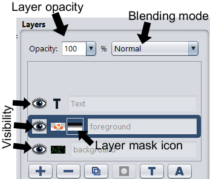

Pixelitor Documentation
Basic Usage
Just launch the program and open the image you want to edit. You can do this by clicking on "File" in the menu bar and selecting "Open". You can also open images by dragging and dropping them onto the program.
Once your image is opened, you can use the various tools and features in Pixelitor to edit and enhance it. This can include things like cropping and resizing the image, using image filters, and more. When you are happy with your edits, you can save your image by clicking on "File" in the menu bar and selecting "Save". You can also save your edits as a separate file by clicking on "File" and selecting "Save As".
When you are saving a file, you need to choose a file format. The best file format to use will depend on the specific needs of your image and the intended use of the file. In general, it is best to use JPEG for photographs and other images with complex color information, PNG for graphics, diagrams, and other images with simple color information, and PXC if you might want to continue working on the file later.
PXC is the native file format of Pixelitor. This format preserves all of the layers, and their settings in the saved file. This means that when you open a PXC file, you can access and edit all of the layers in the image just as you left them. Note that PXC files can't be opened in other applications.Detailed Usage
Pixelitor provides support for image layers and layer masks, allowing you to make complex edits and apply effects to specific areas of your image. You can also use special non-destructive layers in Pixelitor, such as color and gradient fill layers, adjustment layers, shape layers, smart objects, and smart filters, to make advanced edits and apply sophisticated effects to your images.
Layers
A layer is essentially a separate image that is added on top of the original image, and can be edited and adjusted independently of the rest of the image. Layers also allow you to apply different filters and effects to different parts of your image. If parts of a layer are transparent, you can see the layers underneath it, and you can use this transparency to composite different elements together.
The layer stack is a visual representation of the different layers that make up an image. It shows the layers from bottom to top, with the bottom layer representing the background of the image and the top layer representing the element that is closest to the viewer. To rearrange the layers, click and hold on the layer you want to move and drag it to the desired position in the list.
Renaming Layers
By default layers have a generic name, such as "layer 1", but you can change these names to something more specific and useful. A more descriptive and meaningful name can help you organize your layers more effectively.
To rename a layer double-click on the layer name to activate the text box, and then type the new name for the layer. Press Enter to save the new name.
Layer Visibility
 Each layer can be set to be either visible or hidden, allowing you to control which elements of the image are displayed and which are hidden.
To change the visibility of a layer, select the layer in the layers panel and click on the eye icon next to the layer name. This will toggle the visibility of the layer, showing it if it was previously hidden or hiding it if it was previously visible.
The visibility of a layer can also be affected by the visibility of any layer groups that the layer belongs to. If a layer group is hidden, all of the layers within the group will also be hidden, regardless of their individual visibility settings.
Layer Isolation
Layer isolation allows you to temporarily hide all layers except for the one you are working on. This can be useful when you want to focus on a specific layer and temporarily hide all the other layers in the image.
To isolate a layer, hold down the Alt key on your keyboard and click on its eye icon. To exit layer isolation and show all layers again, Alt-click again. This will restore the visibility of all layers in the image.
Layer isolation is available only in the latest builds of Pixelitor.
Layer Opacity
Layer opacity is a setting that determines how transparent a layer will be when it is blended with the layers below it. The opacity of a layer is represented as a percentage, with 100% indicating that the layer is fully opaque and will completely cover the layers below it, and 0% indicating that the layer is fully transparent and will not be visible at all.
Blending Modes
Blending modes are used to control how different layers are combined to create the final image. Each layer in an image has a blending mode that determines how it will be blended with the layers below it. There are many different blending modes available, and each one produces a different effect. For example, the "Normal" blending mode simply combines the layers without any special effects, while the "Multiply" blending mode darkens the image by multiplying the color values of the layers together.
To choose the best blending mode for your image, you will need to experiment with different blending modes and see how they affect your image. You can also adjust the opacity of the layer to control the intensity of the blending mode. In general, the screen blending mode is a good starting point for lightening an image and removing dark pixels, while the multiply blending mode is useful for darkening an image and adding shadows.
Layer Masks
A layer mask allows you to selectively hide or reveal parts of a layer. When you add a layer mask to an image, it appears as a white box next to the layer thumbnail in the layers panel. By default, the mask is white, which means that the entire layer is visible. You can then use a brush tool or other editing tools to paint black onto the layer mask, which will hide the corresponding parts of the layer. Painting with gray will partially hide the layer, allowing you to fade the layer in and out.
Layer masks are a non-destructive way of editing an image, because the original image data is not modified. This means that you can easily make changes to the mask or even remove it completely without affecting the underlying image data.
To use a layer mask, first select the layer that you want to apply the layer mask to. Then create a new layer mask by clicking the "Add Layer Mask" button in the Layers panel. A layer mask can be edited using tools and filters when it is selected. Selection is indicated by a rectangle around the layer mask icon. If the rectangle is around the corresponding layer icon instead, then the tools and filters will be applied to the layer itself, rather than the layer mask.
By default, a layer mask is hidden and you will only see the result of the mask on the layer it is applied to. Alt-clicking on the layer mask icon will show you the mask itself. This can be useful for fine-tuning the mask. Alt-click again on the mask icon to return to the image.
You can right-click on a layer mask icon to see additional options:
- "Delete" removes the mask.
- "Apply" removes the mask as well, but it also transfers its effect into the transparency of the image pixels.
- "Disable" will temporarily hide the effect of the layer mask on the selected layer. The mask can also disabled/enabled by Shift-clicking on its icon.
- "Unlink" allows you to move the layer and the layer mask independently of each other using the move tool.
Merge Down
"Merge down" combines the selected layer with the layer below it, creating a new layer with the combined content of both layers.
To merge down layers, select the top layer in the layers panel and use the "Merge Down" option in the layers menu or press Ctrl+E.
Note that "Merge Down" will only work if the layer below the selected layer is an ordinary image layer, not a special layer type.
Image Layers
Image layers are the default layer type, and they are created automatically when you open an image file or create a new layer. Some tools, such as the brush tool, can only be used with image layers and layer masks, and they will not work with other types of layers such as text layers or shape layers.
Other layer types, with the exception of adjustment layers and smart filters, can be rasterized into image layers. This means that their image data is converted into a static, pixel-based image and they become image layers. For example, rasterizing a text layer will make the text no longer editable, but you will be able to paint on it with the Brush tool.
Text Layers
A text layer is a special type of layer that contains text rather than pixel data. They are useful for adding captions, labels, or other text-based information to an image.
Text layers are fully editable, allowing you to change the text, font, size, and other formatting options at any time, even after you have saved and closed the file. This is the key advantage of using text layers.
To add a text layer, press the T key or click on the "Add text layer" button bellow the layers panel. You can edit an existing text layer by double-clicking on its "T" icon, or by selecting it and pressing Ctrl+T. Note that unlike in some other image editors, in Pixelitor text layers are always edited in a separate dialog window.
Layer Groups
Layer groups allow you to organize and manage multiple layers in your image by creating a hierarchy of layers and easily hiding, showing, or rearranging them. This makes it easier to work with complex images with many layers.
To hide or show all layers within a group, click on the eye icon next to the group name in the layers panel. This will hide or show all layers within the group at the same time.
To create a new layer group, press Ctrl+G. Alternatively, you can press Ctrl+Shift+G to create a new layer group containing the visible layers. When a layer group is active, all new layers are created within that group.
Currently you can't rearrange layers within a layer group by dragging and dropping them. You can use the commands in the Layer/Layer Stack menus instead.
Layer groups can have a special blending mode called "Pass Through". When the blending mode is set to "Pass Through", then the image is calculated as if the group didn't exist. For example adjustment layers inside the group will affect the layers bellow the group.
When any other blending mode is used, then the layers of the group are merged into a single image before being blended with the layers bellow the group.
Currently layer groups are an experimental feature, and they are available only in the latest builds.
Color Fill Layers
A color fill layer is a special type of layer that is used to add a solid color to an image. They work just like an image layer filled with a single color, but they could be easier to manage and they also consume less memory.
Currently color fill layers are an experimental feature.
Gradient Layers
Gradient layers are a nondestructive way of creating gradients. The gradient settings can be edited at any time with the gradient tool.
Currently gradient layers are an experimental feature.
Shape Layers
Shape layers are a nondestructive way of creating shapes. The shape settings can be edited at any time with the shapes tool.
Currently shape layers are an experimental feature.
Adjustment Layers
An adjustment layer is a special layer that allows you to make changes to the colors, tones, and other properties of an image without permanently altering the original image data. Adjustment layers are are a key part of non-destructive editing because they let you experiment with different adjustments and then easily adjust or remove them later if you change your mind. An adjustment layer affects only the layers below it in the layer stack. This allows you to isolate the adjustments to a specific part of the image.
Currently adjustment layers are an experimental feature.
Smart Objects and Smart Filters
A smart object is a special type of layer that allows you to apply filters and transformations to an image without permanently changing the original data. When you convert one or more layers into a smart object, the original image data is preserved in a separate composition called the content of the smart object. You can then apply filters and transformations to the smart object as a whole. These edits are non-destructive, meaning that you can easily adjust or remove them at any time without affecting the underlying image data.
To convert a layer into a smart object, right-click on the layer's thumbnail and choose the "Convert to Smart Object" option from the menu.
To edit the content of a smart object, right-click on the smart object's thumbnail and choose the "Edit Contents" option from the menu. This will open the content composition in a separate tab/window. You can now edit the contents of the smart object just as you would any other image. This may include adding, deleting, or rearranging layers, using tools and filters. When you are satisfied with the changes you have made to the smart object, just close the tab/window.
A smart filter is a filter applied to a smart object. They are non-destructive, because you can easily adjust or remove the filter at any time without affecting the original image data. To create a smart filter, just start a filter while the selected layer is a smart object. The filter will then be attached to that smart object as a smart filter.
A smart filter is similar to a layer in that it has an eye icon to change its visibility, can have a layer mask, and allows you to change its opacity and blending mode. Smart filters and adjustment layers are similar in that they both allow you to apply non-destructive edits to an image. Smart filters offer better performance as they are not re-calculated when editing other layers. This can save time and improve the application's performance.
Currently smart objects and smart filters are experimental features.
Tools
Move Tool
The move tool allows you to reposition the layers in your image. This is useful for aligning and arranging the different elements of your composition, or for moving a layer to a different location on the canvas. To use the move tool, select it and then click and drag on the layer that you want to move.
Holding down the Shift key while dragging will constrain the movement of the layer to a particular axis. This means that the layer will only be able to move horizontally, vertically, or at a 45-degree angle, depending on which direction you drag.
You can also use the arrow keys on your keyboard to nudge the layer in small increments. Holding down the Shift key while using the arrow keys will cause the layer to move in larger increments.
The "auto select layer" checkbox is an option that, when enabled, automatically selects the layer that is currently under the cursor, ignoring transparent areas. This allows you to quickly and easily move the layer without having to manually select it first. When the option is disabled, you must manually select the layer that you want to move.
Crop Tool
The crop tool can remove parts of the image that you don't want, such as the edges or empty space, and keep only the part of the image that you want to keep.
To use the crop tool, select it and drag the mouse over the part of the image you want to keep. This will create a crop box that outlines the selected area. You can also Alt-drag to drag the cropping box out from the center in all directions at once.
Later you can adjust the size and position of the crop box to fine-tune your selection. If you Shift-drag the handles of the crop box, it will constrain the proportions of the cropped area and prevent it from being distorted.
When you are satisfied with your selection, you can crop the image by clicking on the "Crop" button in the toolbar, pressing the Enter key on your keyboard or double-clicking in the selected area.
The "mask opacity" setting determines the transparency of the overlay that is displayed over the image when you are using the crop tool. When the mask opacity is set to a low value, the cropped areas of the image will be more transparent, making it easier to see the whole image. When the mask opacity is set to a high value, the cropped areas will be less transparent, making it easier to focus on the selected crop area.
Composition guides in the crop tool are lines or shapes that are overlaid on the image to help you achieve a well-balanced composition. These guides are based on well-known composition techniques, such as the rule of thirds or the golden ratio. Pressing O while using the crop tool cycles through the available composition guides. Pressing Shift+O changes the orientation of the current guide, if applicable. For example, the "Golden Spiral" guide can be displayed with the spiral starting in the upper left corner, upper right corner, lower left corner, or lower right corner. This allows you to quickly experiment with different compositions and find the one that works best for your image.
The "delete cropped pixels" checkbox determines whether or not the areas of the image outside of the selected crop area will be permanently deleted. When the option is disabled, the cropped areas will remain in the image, but will be hidden. They can be made visible again by using the move tool or the "Enlarge Canvas" command. This allows you to change your mind about the crop and easily restore the hidden areas, but it uses more memory.
The "allow growing" checkbox allows the cropped area to be expanded beyond the original bounds of the image. This can be useful if you want to include hidden parts of the image in the cropped area, or if you want to add empty space around it. Note that "Enlarge Canvas" is another way to enlarge the canvas size.
Selection Tool
The selection tool is used to select a specific part of an image. A selection allows you to isolate a particular area of the image and make changes to it without affecting the rest of the image. To use the selection tool, click and drag on the image to create a selection area.
In order to create a rectangle or ellipse selection, just drag the mouse from one corner of the desired area to the opposite corner. To create a freehand selection, draw a custom shape by dragging with the mouse, then release the mouse button to finalize the selection. To create a polygonal selection, click on the starting point, then move mouse cursor to the next point, and click again. Continue clicking on each point of the desired polygon. When you have reached the final point of the desired area, double-click or right-click to close the polygonal selection.
If you already have a selection in the image, you can use the following keyboard shortcuts to modify it:
- Shift-drag: Adds a new selection to the existing selection.
- Alt-drag: Removes a new selection from the existing selection.
- Shift-Alt-drag: Creates an intersection of the two selections.
In addition to the selection tool, the select menu also contains a number of tools that can be used to modify a selection. To access these tools, you would first create a selection using the selection tool, and then choose a command from the select menu.
- The deselect command (Ctrl+D) removes a selection from the image.
- hide selection edges (Ctrl+H) only hides the selection outline, but the selection effects remain, and pressing Ctrl+H will show the outlines again.
- invert selection (Ctrl+Shift+I) reverses the current selection in an image by deselecting previously selected areas and selecting previously unselected areas.
- The modify selection window allows you to precisely expand or contract a selection or to convert it into a border selection.
- copy selection and paste selection allows you to copy/paste a selection from one image to another. This only works inside Pixelitor, the system clipboard is not used.
In Pixelitor, selections are vector-based, meaning that they are defined by mathematical paths rather than raster-based pixels. This means that a selection will either fully include or exclude the pixels within the selected area. If you want to partially apply an effect, you can use layer masks instead of selections. Layer masks also have the advantage of being able to be non-destructively modified later, while selections come and go.
If you have a selection active on the image when you create the layer mask, the selection will be used to define the initial colors of the layer mask. This means that the selected area will become visible, and the unselected area will be transparent. You can run a blur filter on the mask if you want soft, feathered selections.
Brush Tool 
The brush tool is used to paint or draw on an image. To use the brush tool, select it and then click and drag on the image to paint.
The brush radius determines the size of the brush. It can be increased by pressing the ] key and decreased by pressing the [ key.
The mirror option allows you to create symmetrical effects or patterns in the image, such as a pattern that is automatically mirrored across a vertical or horizontal axis.
The brush tool, like the layers, has opacity and blending mode settings. These settings determine how the brush strokes will interact with the existing colors in the image. In contrast, the opacity and blending mode of a layer determine how the colors of that layer will interact with the colors of the layers below it.
The lazy mouse option can help you to draw precise and smooth brush strokes. Imagine that the brush is dragged behind the mouse cursor by an invisible string at the given distance.
Clone Stamp Tool
The clone stamp tool is used to copy pixels from one part of an image and apply them to another part of the image. This allows you to "clone" or replicate an area of an image.
To use the clone stamp tool, select it and hold down the Alt key to set the "source" point. Then, move the mouse to the area where you want to apply the copied pixels and click and drag to paint. As you paint, the pixels from the source point will be copied to the image.
The aligned checkbox determines whether the cloned pixels will be copied from their original location in the image or from a fixed offset relative to the original location.
The sample all layers checkbox determines whether the clone tool will sample pixels only from the currently active layer or from the composite image of all layers in the image.
The transform dialog allows you to resize, rotate or mirror the cloned area to better match the destination.
Eraser Tool
The eraser tool is used to remove pixels from an image layer. The erased pixels become transparent. For example, if you erase the pixels around the edge of an image layer with the eraser tool, the resulting layer will have a transparent background, which allows you to place it on top of another layer without the original background getting in the way.
Smudge Tool
The smudge tool is used to smear the pixels in an image. It can be used to create a more organic or natural look in the image, or to blend colors together. To use the smudge tool, you would select it, and then drag your cursor over the areas of the image that you want to smudge. As you drag the mouse over the image, it will push the pixels around, creating a smeared effect.
The strength slider determines how much the pixels will be moved.
In the finger painting checkbox is checked, then each brush stroke begins with the foreground color instead of the image colors.
Gradient Tool
The gradient tool is used to create smooth transitions between two or more colors in an image. To use the gradient tool, select it, and then select the colors that you want to use in your gradient by adjusting the foreground/background colors. You can then drag the gradient tool across the image to create the gradient, and adjust the direction and shape of the gradient as needed.
The gradient tool can be used on image and gradient layers.
Paint Bucket Tool
The paint bucket tool can be used to fill large areas of an image, or to quickly change the color of an object. To use the paint bucket tool, you would select it, and then select the color that you want to use. You can then click on the area of the image that you want to fill, and the paint bucket tool will automatically fill it with the selected color.
The tolerance determines how similar the colors in the area must be in order for them to be filled.
Color Picker Tool 
The color picker tool is used to select a specific color from an image. To use the color picker tool, you would select it, and then click on the image. The color picker tool will set the foreground color, which will be used when you draw or paint in the image. Additionally, the color picker tool will display the selected color's RGB/HSB values and its pixel position in the status bar.
If the sample only the active layer checkbox is checked, then the color picker tool will only consider the pixels on the active layer, and ignore any pixels on other layers.
Pen Tool
The pen tool is used to create precise vector paths in an image. Initially the path is just a geometric shape that is overlaid on the image when the pen tool is active. However, you can then convert this path into a selection or a stroke. Note that the pen tool is a more advanced tool, and it can take some practice to master its use.
In order to create a path,
- Select the Pen tool.
- Click on the image to create the starting point for your path. This will create an anchor point on the image. An anchor point is represented by a small square.
- Move the Pen tool to a different location on the image and click again to create a second anchor point. This will create a straight line between the two points.
- To create curves with the Pen tool, click and hold the mouse button while dragging the tool to a new location on the image. This will create a direction line, which you can use to adjust the curve of the path. The direction line will be accompanied by two control points, represented by small circles, that you can use to further fine-tune the curvature of the path.
- To create a closed path, move the Pen tool back to the starting point and click to complete the path. The starting anchor point will become red when the mouse is over it, indicating that the path can be closed.
- Another way to finish a path is to click on the image while holding down the Ctrl key. This will create an unclosed path.
- While creating a path or after finishing it, you can Ctrl-drag drag any anchor point or control point to a new location. Hold down the Ctrl key, then move the cursor over an anchor point or control point. The point can be dragged when it becomes red.
- You can also Alt-drag a control point in order to break the smoothness of the path.
You can also edit and transform the paths after they have been created. To edit a path, select the Edit mode, and then adjust the position of its anchor points and control points. While in Edit mode, you can drag anchor points and control points without holding down the Ctrl key. Additionally, you can access a popup menu on anchor points by right-clicking on them. To transform a path, select the Transform mode, and then you can move, rotate or scale it.
Shapes Tool
The shapes tool is used to create geometric shapes in an image. To use the shapes tool, select it, and then choose the type of shape that you want to create. You can then click and drag on the image to create the shape, and adjust its position, size, and orientation as needed. You can also apply styles or effects to the shape.
The shapes tool currently has only a limited number of shapes.
Hand Tool
The hand tool is used to move the view of the image within the editor's window. The hand tool is only useful when you are zoomed in on an image and the scrollbars are visible, because this is the only time when you can use the tool to move the view of the image.
Zoom Tool
The zoom tool is used to change the current magnification of the image. To use the zoom tool, you would select it, and then click on the image to zoom in, or hold the Alt key key and click to zoom out. You can also drag a selection around the area of the image that you want to zoom in on, which can be useful for quickly focusing on a specific part of the image.
Other
The Navigator Window
The Navigator window can also be used as an alternative to the Hand and Zoom tools. The Navigator window is not visible by default, you need to select "Show Navigator" from the View menu in order to open it. It displays a thumbnail view of the entire image, and can be used to zoom in and out of the image by dragging the red rectangle in the thumbnail image or by Ctrl-dragging a new rectangle to select the area of the image that you want to zoom in on.
Guides
Guides are used to help align and position elements in an image. The commands for creating and managing guides are found in the View menu. Guides are not visible when the image is printed or saved into a single-layer format, so they do not affect the final image.
These alignment guides in the View menu should not be confused with the cropping guides in the crop tool. In the preferences window they have separate color/style settings, but both types are in the same "Guides" tab.
Filters
Filters can be used to modify the appearance of an image. They can be used to apply a wide variety of effects to an image, including blurring, sharpening, color correction, and more. If a there is a selection in the image, then the filter is applied only to the selected part. Filters can be applied directly to the image pixels, or they can be applied as smart filters to a smart object in a nondestructive manner.
The filters can be found under the Color and Filter menus. To start a filter, you can press the F3 key and type a part of its name.
Creating Layer Animations
To create a layer animation, you will need to create a new layer for each frame of your animation, and then create the content of each frame. You can then choose "Export Layer Animation" in the File menu.
Creating Tweening Animations
Tweening is a technique used in animation to create the illusion of movement by generating intermediate frames between the starting and ending points of an animation. In Pixelitor you can select the starting and ending settings of a filter.
To create a tweening animation, select an image layer, and then choose "Export Tweening Animation" in the File menu. A wizard window will be shown, where you can choose a filter, then its initial and final settings.
ImageMagick Integration
Pixelitor can open and save files in a variety of formats:
- Open: JPEG, PNG, BMP, GIF, WebP, ORA, TIFF, TGA, PAM, PBM, PGM, PPM, PFM, PXC.
- Save: JPEG, PNG, BMP, GIF, ORA, TIFF, TGA, PAM, PPM, PXC.
For advanced users, Pixelitor also offers the option to integrate with ImageMagick. This allows you to access additional image formats and use ImageMagick's encoders and decoders.
ImageMagick is a separate open-source project and is not included with Pixelitor. To use this feature, you will need to install ImageMagick 7 on your computer.
Once you have installed ImageMagick, you can enable the integration by configuring the ImageMagick folder in Pixelitor's preferences (Edit/Preferences/Advanced). If ImageMagick is added to the PATH environment variable, then Pixelitor should be able to automatically find it when you try to use the ImageMagick import or export in the File menu.
Please note that using ImageMagick is optional, and you can use Pixelitor without it.